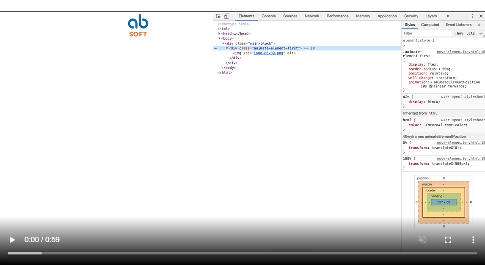
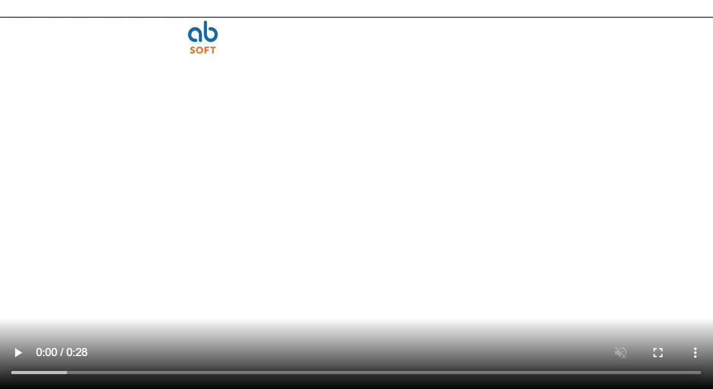
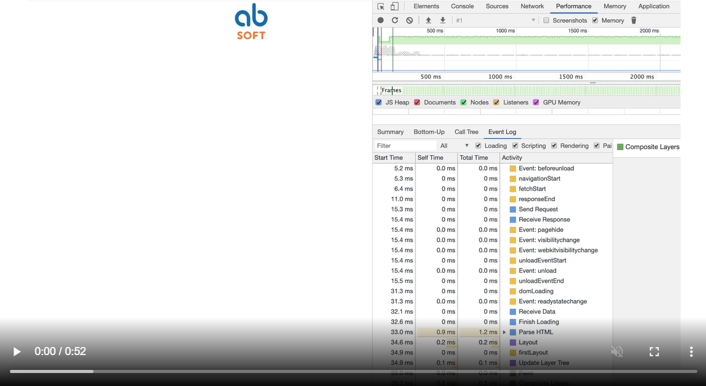
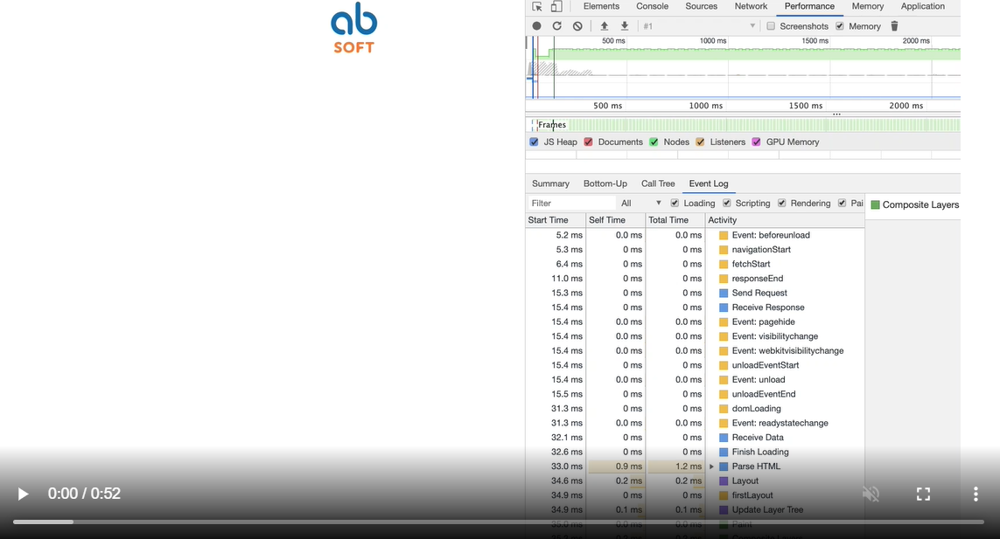
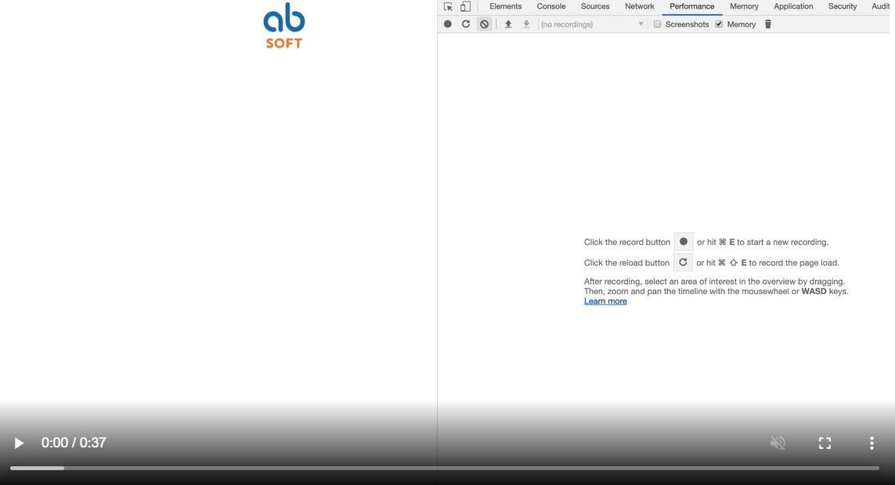

Короткий флешбэк в историю анимации
Прежде чем говорить об ускорении анимации, вспомним не столь далекий 2011 год, когда для ее создания использовались GIF, Flash и JS. Все эти методы хороши, но каждый имеет свой недостаток: GIF — это плюс один реквест для браузера, Flash — уже прошлый век, ну а JS для создания простейшей анимации довольно сложен.
В том же году вниманию IT-специалистов представили CSS3, в котором появилась возможность создавать:
- ❒ скругленные рамки;
- ❒ тени для блоков и текста;
- ❒ множественные фоны;
- ❒ градиенты и шрифты;
- ❒ ну и анимацию, появление которой в CSS3 было революционным.
Прежде чем перейти к ускорению анимации, проанализируем, из каких этапов она состоит и что влияет на ее скорость.
Критический путь рендеринга
Для первичной отрисовки страницы браузер совершает определенную последовательность действий. Ее называют критическим путем рендеринга (Critical Rendering Path, или CRP). Рассмотрим четыре основных шага CRP, чтобы понять, на каком из них анимацию можно ускорить:
- ❒ На стадии Styles к элементам применяют стили.
- ❒ На этапе Layout происходит подготовка места для элементов. Обычно мы указываем высоту и ширину элемента, а браузер подготавливает для него определенное место, чтобы он правильно отрисовался.
- ❒ На этапе Paint элементы анимации заполняются цветом; применяются такие свойства, как text shadow или box shadow.
- ❒ Следующий шаг — это композиция, или Composite. Браузер начинает размещать элементы один относительно другого. Если есть элементы, которые наложены один на другой, то браузер «сообразит», как это отрисовать и какой элемент находится выше по Z-индексу, а какой ниже.
Говоря о создании визуальных эффектов, мы обычно оперируем двумя терминами — Reflow и Repaint.
Reflow и Repaint
Предположим, перед нами стоит следующая задача: проанимировать элемент, увеличить его размер, изменить высоту или ширину. Если это делать с помощью таких свойств, как height и width, то браузеру придется проходить все четыре шага заново: опять применять стили, отрисовывать макет, заполнять цветом элементы, делать компоновку... И это будет касаться каждого кадра вашей анимации. То есть если вам необходимо увеличить элемент на 10 пикселей, то страница будет перерисовываться 10 раз. Естественно, это все повлияет и на скорость, и на качество анимации.
Что касается исключительно процесса Repaint, то в этом случае шаг Layout будет отсутствовать. Так как элемент не изменил ни размер, ни свое позиционирование на плоскости. Такое случается, когда вы делаете ховер на элемент, например заливаете его новым бэкграундом.

И мой любимый этап, No reflow and No Repaint, самый выгодный для браузера шаг. Так можно добиться того, чтобы не затрагивалась смена макета и отрисовка не происходила заново. Достигнуть этого можно с помощью трансформа.
Композиция
Остановимся подробнее на шаге «Композиция», потому что именно от него зависит, насколько плавной будет анимация. На этой стадии браузер, прежде чем отрисовать страницу, проходит несколько шагов:
- ❒ страница делится на слои так, чтобы элементы в браузере не перекрывали друг друга и отрисовка была правильной;
- ❒ слои растеризируются;
- ❒ слои выводятся на экран.
Как ускорить анимацию
Как, зная все вышесказанное, ускорить анимацию? С помощью аппаратного ускорения (или ускорения графики).
При аппаратном ускорении графический процессор помогает браузеру отрисовывать страницу путем выполнения некоторых сложных задач, а не сваливает всю работу на центральный процессор. В момент, когда CSS-операция получает аппаратное ускорение, происходит скачок скорости и отрисовка страницы выполняется быстрее.
Известно, что центральный процессор размещен на материнской плате компьютера и является его мозгом. В свою очередь, графический процессор (ГП) размещён на графической карте и отвечает за обработку и отрисовку графики. Он создан специально для выполнения сложных математических и геометрических вычислений, требуемых для отрисовки графики, поэтому если переложить груз некоторых операций на ГП, то получим существенное повышение быстродействия и снижение загрузки центрального процессора на мобильных девайсах.
В основе аппаратного ускорения — иерархическая модель, используемая браузером при отрисовке страницы. Когда с элементом на странице проводятся определенные операции (такие, как 3D-трансформации), он перемещается на свой собственный «слой», где может отрисовываться независимо от остальной страницы и выводиться на экран позже. Это изолирует отрисовку содержимого так, что остальную часть страницы не нужно отрисовывать повторно, если трансформация элемента — это единственное изменение между фреймами. Такой порядок часто положительно влияет на скорость отрисовки.
Итак, при аппаратном ускорении:
- ❒ страница делится на слои;
- ❒ слои растеризируются в текстуры;
- ❒ текстуры помещаются в GPU — и мы можем смело говорить, что теперь за анимацию будет отвечать видеокарта;
- ❒ браузерный композитор инструктирует GPU, как собрать конечное изображение. На этом шаге создается отдельный композитный слой — часть страницы, которая отрисовывается и компонуется независимо на GPU (поддерево DOM). Он может растягиваться, перемещаться и скрываться без отрисовки. Это важно, поскольку отрисовка — довольно ресурсоемкий процесс, из-за которого в том числе может глючить анимация.
Как добавлять в этот композитный слой элементы:
- ❒ 3D-трансформация (элементы анимируются с помощью translate3D, translateS).
- ❒ Элементы <video>, <canvas>, <frame>. Точно так же создается композитный слой и обрабатывается на GPU.
- ❒ Анимация через transform, opacity и CSS Transition Animation.
- ❒ position; fixed.
- ❒ will change. Это свойство не только подсказывает браузеру, как будет меняться анимация, но и добавляет элемент в композитный слой еще до того, как вы начинаете анимировать элемент.
- ❒ filter.
Важно: 2D-анимация выполняется браузером на лету. Как только вы указываете 1-й и 5-й пункты, браузер уже знает, как ему надо строить DOM, что у него находится в композитных слоях, и не тратится на операцию repaint.
Как отследить работу анимации в браузере
Теперь определим, какие именно элементы попадают в слои, по какой причине и сколько памяти расходуется на это действие.
Поиск слоев на странице
Хочу обратить ваше внимание на классную тулзу в Google Chrome, которая поможет проверить, что именно попадет в композитный слой. Расскажу, как ее включить.
Заходите в DevTools -> More tools. Включаете вкладку Layers. И анимируемый элемент попадает в композитный слой. Вы увидите причину его попадания в композитный слой, а также сколько памяти будет занято на вычисление этой операции. Здесь можно увидеть, какие элементы отрисовываются постоянно, а какие — нет. Есть тулза Rendering в дополнительном DevTools в Chrome. Здесь можно включить Paint Flashing, который будет демонстрировать покадрово, что происходит с вашим элементом.
Отладка композитных слоев
Понаблюдать за композитным слоем можно с помощью этой же тулзы, просто переключившись в Layer Borders. Композитный слой будет помещен в оранжевую рамку, и будет понятно, что его можно отдебажить.
Помимо способа, описанного выше, хотелось бы рассказать, как можно понять, какой слой композитный, а какой задействует перерисовку макета целиком.
Есть тулза под названием Rendering. В ней есть различные настройки, но для того, чтобы отследить композитный слой, нас интересует Paint flashing. При включении этой опции слой помещается в рамку и показывается, сколько раз он перерисовывается. Так вот, в случае со свойством left на видео № 1 можно увидеть, что объект перерисовывается постоянно в каждом кадре.
А в случае с использованием смещения transform он перерисовывается в начале и в конце анимации, то есть всего два раза.
Можно посмотреть и на слайд анимации без композиции в тулзе Performance. Я запустил перезагрузку. На второй линии столбцы показывают процесс перерисовки элемента.
То есть если вы будете неправильно анимировать, а неправильно — это значит с помощью смещения left, то перерисовка будет происходить каждый раз и анимация будет подтормаживать.
Отладка шагов CRP
С помощью того же инструмента и EventLog можно также убедиться в затратности этого процесса.
Теперь на реальном примере рассмотрим отличия двух подходов к реализации анимации. Допустим, перед нами стоит задача смещать элемент по оси Х на 500 пикселей от верхней левой границы экрана. Казалось бы, задача достаточно тривиальная. Какие есть варианты?
Вариант № 1 — сделать это с помощью свойства left.
Как это увидел браузер? Судя по видео, на каждое смещение пикселя выполняются всем нам знакомые 4 шага: Styles -> Layout -> Paint -> Composite.
Например, если нам нужно сместить элемент на 500 пикселей, то такие шаги будут выполняться 500 раз каждый. Представляете себе нагрузку на ЦП, если, помимо одного элемента, у нас еще и другие элементы будут смещаться, не говоря уж об их перерисовке относительно нашего.
Вариант № 2 — смещение с помощью свойства transform.
Теперь при взгляде на результаты мы можем увидеть, что количество шагов для одного кадра уменьшилось и происходит пересчет стилей и вызов композитного слоя. В чем профит? Мало того, что мы с вами уменьшили количество шагов для отрисовки, так еще и перенесли нагрузку на видеоадаптер.
В то же время с этим подходом надо быть очень аккуратным, так как он может повлечь за собой процесс неявной композиции.
Неявная композиция — процесс, в котором один или несколько элементов, которые по Z-индексу находятся выше композитного элемента, также становятся композитными. То есть они отрисовываются в отдельное изображение, которое затем отправляется на GPU.
Чем отличаются JS и CSS и что лучше использовать для создания анимации
JS☑ Полный контроль над анимацией. Вы можете полностью управлять анимацией, но тогда вы теряете заветные 60 fps, которые дают высокое качество картинки.
☑ Синхронизация с частотой обновления экрана. Операции, которые выполняются с помощью JS-анимации, выводятся с частотой, с которой обновляется этот экран. Вы не ощущаете никаких задержек.
☒ Забивание основного потока. Если будет ошибка ниже или выше в CSS, то ваша анимация просто перестанет работать.
☑ Простота в использовании. Например, чтобы заставить элемент вращаться по кругу, вам не надо проводить тематические операции. Это все быстро решается с помощью transform’a, к примеру.
☑ Свобода от основного потока. Если у вас есть где-то ошибки в коде, ваша анимация будет работать.
☑ Синхронизация с частотой обновления экрана.
☒ Неконтролируемость. У вас нет полного контроля над своей анимацией, кроме паузы и запуска.
☒ Рассинхронизация. Вы не можете управлять элементами относительно друг друга.
Советы и выводы
- ❒ Относитесь к GPU, как к кешу. Все, что попадает в композитный слой, уходит и в память видеокарты. Поэтому важно не забивать ненужными элементами GPU. Это может привести к тормозам или крэшу браузера.
- ❒ Подготавливайте текстуры заранее.
- ❒ Избегайте неявной композиции.
- ❒ Используйте дружелюбные GPU свойства.
- ❒ Необходимо понять, как принудительно отрисовать объект в GPU с помощью transform hack.
- ❒ Учтите: рендеринг в GPU влияет на сглаживание шрифтов. Это происходит потому, что в GPU и CPU разные механизмы рендеринга. То есть если отключить аппаратное ускорение в конце анимации, то на протяжении всей анимации текст будет размытым.